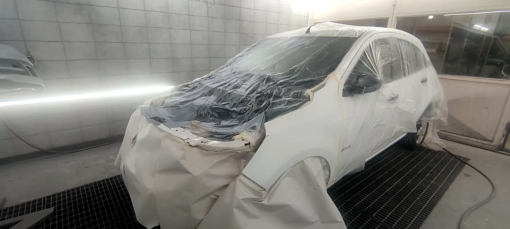
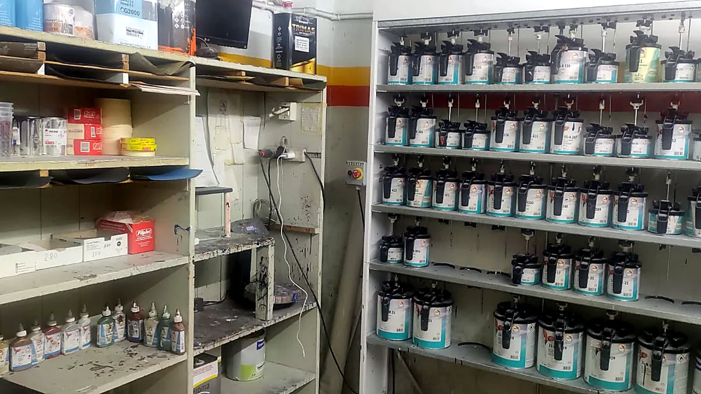

Chapa y pintura · Castelar
Tu vehículo vuelve a su estado original.
Chapa, pintura y reparación de siniestros en Castelar. Trabajamos con compañías de seguros, con empresas y con particulares.
- Cabina de pinturaAplicación y secado controlados
- Medición láserGeometría verificada
- Bancada de estiramientoEstructura a medida de fábrica
- Laboratorio de coloresColor según código del vehículo
El taller
Todo el trabajo se resuelve puertas adentro.
Taller Cacho está en Diego Araoz 3339/49, Castelar. Hacemos chapa, pintura y reparación de siniestros para particulares, empresas y compañías de seguros.
Estamos equipados para el circuito completo: enderezado sobre bancada, verificación de la estructura con medición láser, pintura en cabina y control de terminación. No tercerizamos etapas.

-
Cabina de pinturaTemperatura y flujo de aire controlados
-
Bancada de estiramientoChasis y largueros a su posición original
-
Sistema de medición láserEstructura verificada contra medidas de fábrica
-
Laboratorio de coloresColor preparado según el código del vehículo
-
Diagnóstico computarizadoControl electrónico antes y después de reparar
-
Sistema de aire acondicionadoCarga y control del circuito de climatización
Servicios
Qué hacemos.
- ChapaEnderezado y reemplazo de paños.
- PinturaFondo, color y barniz en cabina.
- Reparación de siniestrosChoques, granizo y daño estructural.
- Trabajos para segurosPeritaje, documentación y gestión.
- PulidosCorrección de micro rayas y brillo.
- RestauracionesUnidades con óxido o pintura vencida.
- Reparaciones integralesMecánica, electricidad y aire acondicionado.
Compañías de seguros
Preparados para trabajar con aseguradoras.
Un siniestro tiene dos partes: la reparación y el trámite. Estamos equipados para resolver la primera con respaldo técnico y organizados para que la segunda no la termines manejando vos.
-
Peritaje ordenadoRecibimos al perito con el vehículo desarmado y las tareas ya relevadas.
-
Documentación del trabajoRegistro fotográfico del antes, del proceso y de la entrega.
-
Respaldo técnicoBancada, medición láser y diagnóstico detrás de cada ítem presupuestado.
-
Un solo interlocutorUna persona sigue el expediente de punta a punta.
El taller por dentro
Cabina de pintura y laboratorio de colores.
{kind=link}
{kind=link}
{kind=link}
{kind=link}
Preguntas frecuentes
Lo que más nos preguntan.
Tomamos trabajos derivados por compañías y también siniestros que gestiona directamente el titular. Escribinos por WhatsApp con el nombre de la aseguradora y el número de siniestro, si ya lo tenés, y te decimos cómo seguir en tu caso.
No. Podés acercar el vehículo al taller o mandarnos fotos por WhatsApp para una estimación inicial. El presupuesto cerrado lo damos después de revisar el vehículo, porque hay daños que recién se ven al desarmar.
El color se prepara en el laboratorio del taller a partir del código de fábrica del vehículo y se ajusta sobre probeta antes de aplicarlo. En paños contiguos se trabaja con difuminado, que es lo que evita que se marque el corte entre una pieza y la otra.
En Diego Araoz 3339/49, Castelar, partido de Morón, provincia de Buenos Aires. Abajo tenés el mapa y el botón para abrir la ubicación directamente en Google Maps.
Contacto
Hablemos de tu vehículo.
Escribinos por WhatsApp con una foto del daño y te decimos cómo seguimos. Si es un siniestro, sumá el nombre de la compañía.
Dónde estamos
Diego Araoz 3339/49Castelar
Partido de Morón, provincia de Buenos Aires. Atendemos toda la zona oeste.
Abrir en Google Maps